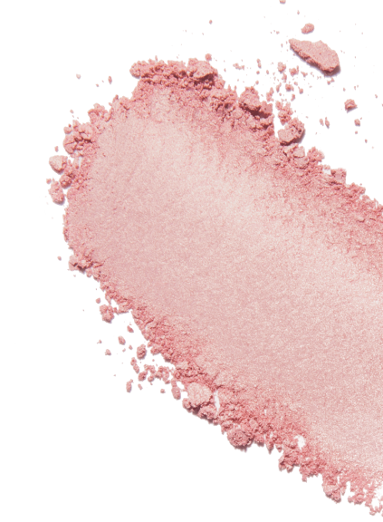
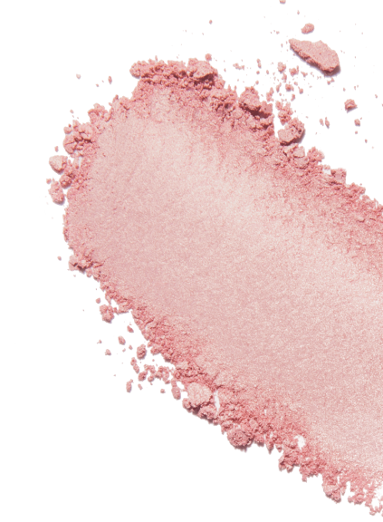

Ztratila 45 kg! Adele sdílela svou novou fotografii a řekla tajemství její transformace


5. května, slavná zpěvačka a vítězka 15 Grammy, Oscara a Zlatý glóbus, Adele oslavila 32. narozeniny. V poslední době se zpěvačka neobjevila na veřejnosti a ani příliš často neaktualizovala svůj Instagram.Nedávno se však objevila na sociálních sítích, aby poděkovala lidem za napsání jejích vřelých přání k narozeninám, spolu s fotografií díky níž její fanoušci šokovali.
Takhle vypadala Adele v roce 2013, během 85. výroční ceny "Oscar"

Tehdy se zpěvačka také vypadala roztomilá. Všichni byli zvyklí na její vzhled, ale podle jejího přiznání byla sama velmi nepříjemná mít takovou váhu. Na začátku své kariéry vážila 132 kg, ale postupem času se jí to trochu podařilo zhubnout, nicméně úplně zbavit nadváhu ona nemohla.
A tak v roce 2019, po rozvodu se Simonem Konekim, začala Adele zhubnout a její fanoušci si začali všímat .
Dnes zpěvačka se úplně změnila a ukázala, jak vypadá teď, zveřejněním nové fotografie k narozeninám.
Jak Adele vypadá teď:

Nejenom zhubla ale také mladší nejméně o 10 let! Fanoušci si všimli, její úžasné transformace a se začali zajímat, jak se jí podařilo v tak krátké době zhubnout!
Adele neignorovala otázky svých fanoušků a odpověděla na ně v příštím příspěvku. To je to, co napsala:
"Nikdy jsem neměla komplexy s nadváhou . Začala jsem si však všímat, že se můj zdravotní stav zhoršil, objevila se dušnost a uvědomila jsem si, že je třeba něco změnit...Chci být zdravá pro svého syna.
Začala jsem intenzivním tréninkem na simulátorech, změnila jsem stravu, vzdala se špatných návyků, měla malý účinek. To není výsledek, na který jsem čekala. ”
Zhruba ve stejnou dobu, Adele objednala Slimagic kapky už jsme o nich mluvili!! SLIMAGIC – přírodní přípravek pro spalování viscerálního (hlubokého) a podkožního tuku, má složitý účinek na tělo, nasycený vitamíny a minerály. Rostlinný koncentrát nasycuje tělo vitamíny A, E, skupina B, stimuluje aktivní spalování tuků bez poškození zdraví. Odstraňuje celulitidové útvary na bocích, břiše a pažích již ve 2. týdnu používání. Nebudete muset dodržovat dietu,můžete dokonce pít červené víno a jíst hořkou čokoládu.

V loňském roce zpěvačka Grammy se rozhodla zhubnout se Slimagic. Výsledky šokovaly její fanoušky. Její podařilo ztratit 45 kg za pouhé 3 měsíce za pouhé 3 měsíce a teď vypadá skvěle!
Zde je to, co napsala ve svých sociálních sítích:
“ Nejdůležitější věc při hubnutí - Ujistěte se, že nedošlo k poškození vašeho těla. Bohužel, nejoblíbenější metody hubnutí to dělají. Nemůžete sedět na dietě po celou dobu, a ne každý to vydrží. Když nedosáhli svého cíle, lidé se obracejí na prášky, z nichž velká většina pouze způsobuje poruchy v těle. Ztráta váhy by měla být přirozená a neměla by narušovat vnitřní procesy v těle. Dnes, Slimagic - jediný bezpečný prostředek. Aktivní mikroelementy zrychluje metabolismus a spalování tukové hmoty alespoň 10 krát. Jsem přesvědčena, že tento prostředek je to nejlepší, co dnes existuje v moderní výživě. A zkusila jsem to na sobě a dosáhla úžasných výsledků bez poškození mého těla. Myslím, že - 45 kg za tři měsíce je úspěch!”
 Zdroj: https://www.instagram.com/adele/
Jak Adele vypadá teď:
Zdroj: https://www.instagram.com/adele/
Jak Adele vypadá teď:
“ Slimagic jsem pila ráno se sklenicí vody .A po týdnu mě výsledky překvapily. Moje energie byla na svém maximu a zároveň jsem neměla hlad a nevyčerpala jsem se tréninkem. O týden později jsem zvážila a viděla jsem, že jsem ztratila 4 kg. Ráno jsem pokračoval v pití kapek, chodil jsem po svých každodenních činnostech a hmotnost šla pryč. Ve čtvrtém týdnu jsem znovu zvážila a byla jsem potěšena! Moje hmotnost se snížila o 12 kg . Po dvou měsících vážím méně o 35 kilogramů!!! Jsem velmi ráda, že se s vámi mohu podělit o své úspěchy, a ještě více ráda, že vám mohu říct, jak jsem toho dosáhla. Buďte zdraví, starejte se o sebe a starejte se o své zdraví!” takže Adele končí svůj příspěvek.
Slimagic získal certifikaci v Řecku, a dokud se neobjeví v lékárnách, nejspolehlivější způsob, jak si tento produkt koupit - objednat na oficiálních webových stránkách dodavatele. To zaručuje jeho kvalitu a šetří Vás před padělky.
Chcete-li vyplnit žádost, stačí pro komunikaci zadat své jméno a telefonní číslo na oficiálních stránkách produktu "SLIMAGIC" a počkejte, až manažer potvrdí objednávku


Komentáře
Ach, co to je za žena, změnila se nepoznání!!! Miluji ji)
OdpovědětPodařilo se mi ztratit 31 kg, moje hmotnost byla 94 kg. Pamatuji si, jak těžké to bylo na začátku. Je těžké, když nejste podporováni, zejména když je vaše váha obrovská, ale "SLIMAGIC" spálil všechny kilogramy, neočekávala jsem takové výsledky!
O těchto kapkách jsem už slyšela a dokonce jsem si objednala, beru jen týden, ale v prvních 7 dnech jsem ztratila 3 kg a jen 18 zůstalo! Já uspěji! Věřím:)
OdpovědětMusím to zkusit, chci jako Adele!
OdpovědětJsem v šoku!!! Taková změna!
OdpovědětLže, pravděpodobně provedla operaci. Nepomůže, zkusila jsem tyto kapky. Podvod!
OdpovědětAhoj Věro a děkuji za zprávu. Toto je velmi zvláštní prohlášení, protože náš produkt má všechny certifikáty a prošel skutečné testy. Po konzultaci s našimi specialisty - doporučujeme zkontrolovat denní stravu. Možná jste nevědomky začali jíst víc? Nedostatek pokroku je pochopitelný - lek pomáhá, ale nevidíte ji. Ještě jednou děkuji za odpověď a přeji hezký den.
OdpovědětZkontrolováno, opravdu začala jsem jíst více ((((
OdpovědětPak vám doporučujeme, abyste si koupili prostředek znovu, ale v plném kurzu.
OdpovědětTak jsem to udělala - díky, pomohlo to)
Podařilo se mi také zhubnout! Hodně štěstí všem, mentálně podporuji každého, kdo bojuje s nadváhou!
OdpovědětStejně jako Adele mi tento prostředek hodně pomohl. Velký rozdíl mezi tím, co bylo a co se stalo nyní. Nečekala jsem, že ve svých letech můžu ztratit téměř 40 kg (dosud -37 kg). Zdraví je prostě skvělé! Takové řešení pro lidi jako jsem já, je prostě perfektní! Doporučuji SLIMAGIC! Zde jsou mé výsledky:
Před užitím kapek SLIMAGIC jsem vážil 90 kg. V mládí jsem byl vždy štíhlý pak ztloustl, zejména v pasu a bocích. V 35 letech jsem si uvědomil, že musím něco udělat. Téměř rok se věnoval výcviku, ale nemohl dosáhnout své normální postavy. Pak přidal do stravy „SLIMAGIC“ a během několika týdnů se změnil na osobu, na kterou si vzpomínám. Teď se starám o sebe, a pár balíčků SLIMAGIC mám vždy ve skříni.
OdpovědětPo porodu hmotnost získává velmi rychle. Doporučují hodně běhat, skákat přes lano a chodit 5 km denně. Ale věděli jste, že to všechno je velmi škodlivé pro klouby? Je velmi důležité pít něco pro klouby současně. Je dobré, že "SLIMAGIC" má vše, co potřebujete, všechny vitamíny . Je zvláštní, že ne každý o tomto ví.
OdpovědětTaké jsem použila tyto kapky. V pouhých 1 úplném kurzu s „SLIMAGIC“ jsem ztratila téměř 15 kg, jedná se o velmi velké změny. Samozřejmě jsem přestala jíst sladkosti, jako předtím. Ale nemohu odmítnout své zapečené rohlíky se sýrovosalámovou pomazánkou.
Je oficiální web výrobce jediným místem, kde můžeme v naší zemi získat „SLIMAGIC“, nebo se stále prodává v některých internetových obchodech?
OdpovědětBohužel ano. Někdy se prodává v lékárnách, ale za cenu více než 2 000 korun. Nereálná cena.
OdpovědětSkvěle, pokud to opravdu funguje. Jsem skeptická na to. A mohu věřit v sílu koktejlu více než kapky. Ale objednám, zkusím to.
OdpovědětPiju SLIMAGIC už dlouho. Byly také problémy s hmotností, ale teď na to ani nepřemýšlím, snězím všechno, a pokud něco, vypila kurz a opět normální.
OdpovědětMÁM HMOTNOST 97 KG! NEBUDE VÍCE? Nechci 100 kg na vahách HELP!!!!!! Najdu tento přípravek v lékárně"??????
OdpovědětAnno, můžete hledat, ale je lepší si objednat na oficiálních stránkách výrobce, zejména proto, že cena je nižší než v lékárnách a existují akce.
OdpovědětDobrý den, Anno. V současné době lze „SLIMAGIC“ zakoupit pouze na našich oficiálních webových stránkách.
Odpovědět